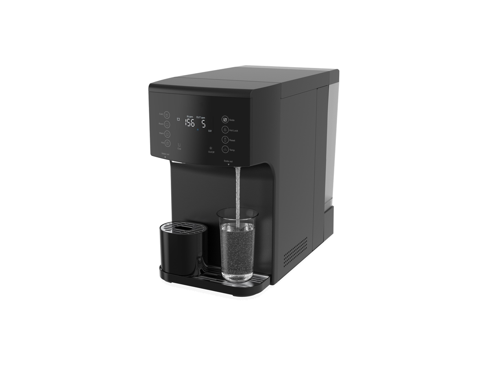

卓上型
卓上型RP-C07
加熱ジャグ付きRO浄水器
SKU: RP-C07
MOQ：お問い合わせ時に確認

卓上型システム
炭酸水・水素水卓上ファミリー（P90 / P90-1）— 2バリアント、1ページ。
RP-C15は2つのバリアントを持つ卓上RO浄水器ファミリーです。P90は炭酸水モデルで、1台で炭酸水・氷水・温水を提供します。P90-1は水素水モデルで、氷水と温水付きの水素豊富な水を提供します。両方ともコンプレッサー冷却で、UV殺菌付きROろ過を使用し、内蔵タンクまたは配管接続で動作します。仕様はモデルと注文ごとに確認します。
以下の仕様はバリアントごとに記載 — まずP90炭酸水モデル、次にP90-1水素水モデル。すべての数値はメーカー仕様書から引用。
このページの2バリアント — P90炭酸水モデルとP90-1水素水モデル。
電圧／周波数は対象国に合わせて設定可能です。その他の構成は注文ごとに確認します。
RP-C15は2つのバリアントを持つ卓上RO浄水器ファミリーです。P90（炭酸水モデル）とP90-1（水素水モデル）です。P90は1台で炭酸水・氷水・温水を提供し、P90-1は氷水と温水付きの水素豊富な水を提供します。両方ともコンプレッサー冷却で、UV殺菌付きROろ過を使用し、内蔵タンクまたは配管接続で動作します。
最小注文数量はいくつですか？
P90-1の最小注文数量は300台です（本ページの記載のとおり）。P90の最小注文数量は注文ごとに確認します。
大口注文の前にサンプルを注文できますか？
はい。サンプルは15日でご用意できます。サンプル費用は初回大口注文時に返金されます。P90-1の初回量産注文は本ページ記載のとおり約45日かかります。FOB深圳条件で出荷します。
P90-1のフィルターはどれくらい持ちますか？
本ページの記載のとおり、複合フィルターは約6か月、ROメンブレンは12か月使用できます。UVランプは10,000時間使用できます。
バリアント画像にホバーすると仕様が表示されます。タッチ画面では画像をタップしてください。


P90製品ビデオ。
P90-1製品ビデオ。
各モデルの全仕様を並べて表示。下の仕様表に各モデルの値を示す。
| 仕様 | RP-C15-1 — 炭酸水（P90） | RP-C15-2 — 水素水（P90-1） |
|---|---|---|
| 製品タイプ | 炭酸水・氷水・温水付き卓上RO浄水器 | 卓上型水素水RO浄水器 |
| RO膜 | 100G | 100 GPD |
| ろ過 | ステンレスプレフィルター＋複合＋RO、UV殺菌付き | PP/C + RO + UV |
| 水タンク | 原水4 L／純水1.3 L／炭酸水0.2 L | 原水4 L；排水1 L（共用タンク）；純水1.3 L |
| 水源 | デュアルモード — タンク式または配管接続式 | ご注文ごとに確認いたします |
| 温度設定 | 常温、冷水、25°C、50°C、80°C、95°C | ご注文ごとに確認いたします |
| 加熱と冷却 | ご注文ごとに確認いたします | 温水＋冷水（モデルにより異なります） |
| 温水 | 24 L/h (≥ 90 °C) | ご注文ごとに確認いたします |
| 氷水 | ≤ 10 °C, 1 L/min | ご注文ごとに確認いたします |
| 炭酸水 | 187 mL/min、ワンタッチ（1回170 mL） | ご注文ごとに確認いたします |
| 水素モジュール流量 | ご注文ごとに確認いたします | 60 mL/min |
| 溶存水素 | ご注文ごとに確認いたします | 1500 ppb（常温水素水）；1900 ppb（冷水素水） |
| 吐出量 | 250 / 350 / 550 mL | ご注文ごとに確認いたします |
| 吐出流量 | ご注文ごとに確認いたします | 1 L/min |
| 製水率 | ご注文ごとに確認いたします | 270 mL/min |
| 定格浄水量 | ご注文ごとに確認いたします | 2000 L |
| 純水対排水比 | ご注文ごとに確認いたします | 1:1 |
| フィルター寿命 | ご注文ごとに確認いたします | 複合フィルター約6か月；ROメンブレン12か月 |
| UVランプ寿命 | ご注文ごとに確認いたします | 10,000時間 |
| ディスプレイ | TDS（入口・出口）、フィルター寿命リマインダー | ご注文ごとに確認いたします |
| 騒音レベル | 45 dB未満 | ご注文ごとに確認いたします |
| ハウジング | 合金（ブラック／ホワイト／ダークブルー；カスタムカラー可） | 金属合金（ブラック／ホワイト；カスタムカラー可） |
| 寸法 | 420 × 244 × 450 mm | 243 × 463 × 415 mm |
| 正味重量 | 12.8 kg | 16.8 kg（製氷＆温水水素モデル）；14.5 kg（製氷水素モデル） |
| 出力 | 2050 W | 1450 W |
| 電圧／周波数 | 対象国に合わせて設定可能 | 対象国に合わせて設定可能 |
| MOQ | ご注文ごとに確認いたします | 300台 |
| リードタイム（初回量産注文） | ご注文ごとに確認いたします | 約45日 |
メーカー仕様書によるP90炭酸水モデルの仕様行。
| 製品タイプ | 炭酸水・氷水・温水付き卓上RO浄水器 |
|---|---|
| RO膜 | 100G |
| ハウジング | 合金（ブラック／ホワイト／ダークブルー；カスタムカラー可） |
| 水タンク | 原水4 L／純水1.3 L／炭酸水0.2 L |
| 温度設定 | 常温、冷水、25°C、50°C、80°C、95°C |
| 吐出量 | 250 / 350 / 550 mL |
| 温水 | 24 L/h (≥ 90 °C) |
| 氷水 | ≤ 10 °C, 1 L/min |
| 炭酸水 | 187 mL/min、ワンタッチ（1回170 mL） |
| ろ過 | ステンレスプレフィルター＋複合＋RO、UV殺菌付き |
| 水源 | デュアルモード — タンク式または配管接続式 |
| ディスプレイ | TDS（入口・出口）、フィルター寿命リマインダー |
| 騒音レベル | 45 dB未満 |
| 寸法 | 420 × 244 × 450 mm |
| 正味重量 | 12.8 kg |
| 出力 | 2050 W |
| 電圧／周波数 | 対象国に合わせて設定可能 |
メーカー仕様書によるP90-1水素水モデルの仕様行。
| 製品タイプ | 卓上型水素水RO浄水器 |
|---|---|
| 吐出流量 | 1 L/min |
| 製水率 | 270 mL/min |
| 水素モジュール流量 | 60 mL/min |
| 溶存水素 | 1500 ppb（常温水素水）；1900 ppb（冷水素水） |
| ろ過 | PP/C + RO + UV |
| タンク容量 | 原水4 L；排水1 L（共用タンク）；純水1.3 L |
| RO膜 | 100 GPD |
| 定格浄水量 | 2000 L |
| フィルター寿命 | 複合フィルター約6か月；ROメンブレン12か月 |
| UVランプ寿命 | 10,000時間 |
| 加熱と冷却 | 温水＋冷水（モデルにより異なります） |
| 純水対排水比 | 1:1 |
| ハウジング | 金属合金（ブラック／ホワイト；カスタムカラー可） |
| 寸法 | 243 × 463 × 415 mm |
| 正味重量 | 16.8 kg（製氷＆温水水素モデル）；14.5 kg（製氷水素モデル） |
| 出力 | 1450 W |
| 電圧／周波数 | 対象国に合わせて設定可能 |
| MOQ | 300台 |
| リードタイム（初回量産注文） | 約45日 |
仕様はROPureOEMカタログに基づいています。値がまだ確認されていない場合は「注文ごとに確認」と記載しています。未確認の数値は公表しません。